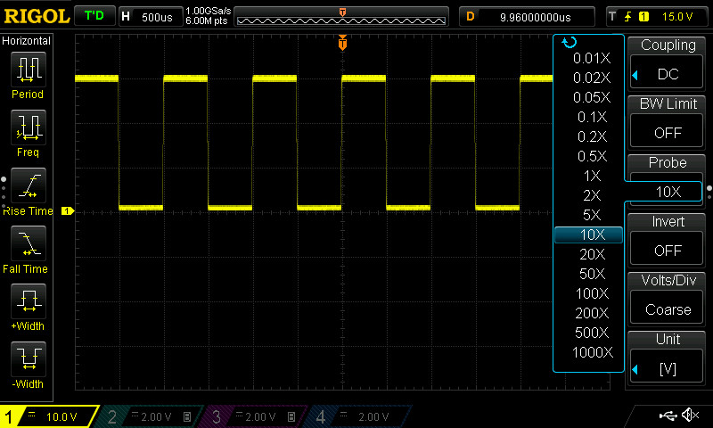
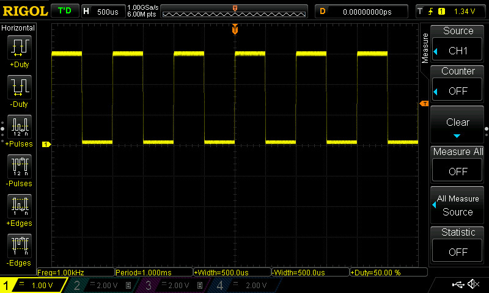

แนะนำการใช้งานออสซิลโลสโคป RIGOL DS1054Z ในเบื้องต้น#
บทความนี้กล่าวถึง ตัวอย่างการใช้งานออสซิลโลสโคป RIGOL DS1054Z
Keywords: Rigol DS1054Z, Digital Storage Oscilloscope, Trigger Mode, Trigger Type, Input Coupling Mode, Probe Attenuation Setting, Time/Div, Volt/Div, Timing & Electrical Parameter Measurement
▷ ฟังก์ชันการทำงานของออสซิลโลสโคป#
ออสซิลโลสโคปแบบดิจิทัล (Digital Oscilloscope) เป็นเครื่องมือวัดสัญญาณไฟฟ้า ทั้งแบบแอนะล็อกและดิจิทัล อาจเป็นสัญญาณคาบ (Periodic) และไม่มีคาบ (Aperiodic) ก็ได้ ในการทดลองวงจรไฟฟ้าระดับพื้นฐาน มักเป็นสัญญาณคาบ เช่น สัญญาณรูปคลื่นไซน์ สัญญาณรูปคลื่นสี่เหลี่ยม เป็นต้น
สิ่งที่ควรรู้เกี่ยวกับการใช้งานออสซิลโลสโคปในเบื้องต้น มีดังนี้
- การใช้งานสายวัด หรือ สายโพรบ (Measurement Probe) และการเชื่อมต่อกับเครื่องออสซิลโลสโคป ช่องรับสัญญาณอินพุตซึ่งมีมากกว่าหนึ่งช่อง การตั้งค่าลดทอนสัญญาณ (Probe Attenuation Setting) และการต่อสายกราวด์ (Ground) ของวงจรกับระบบกราวด์ของออสซิลโลสโคป
- การตั้งค่าทริกเกอร์ (Trigger Settings) การเลือกใช้ประเภทของทริกเกอร์ (Trigger Type) การเลือกช่องสัญญาณอินพุตสำหรับทริกเกอร์ (Trigger Source) และโหมดการแสดงผลสำหรับทริกเกอร์ (Trigger Mode)
- โหมดการเชื่อมต่อกับสัญญาณอินพุต (Input Coupling Mode)
- การตั้งค่า Time/Div (แกนนอนสำหรับเวลา) และ Volt/Div (แกนตั้งสำหรับแรงดันไฟฟ้า)
▷ การตั้งค่า "ทริกเกอร์#
ทริกเกอร์ (Trigger) คือ ฟังก์ชันการทำงานที่สำคัญของออสซิลโลสโคป เพื่อเลือกแสดงสัญญาณในตำแหน่งหรือช่วงเวลาที่สนใจ โดยตัวเลือกทั่วไปสำหรับออสซิลโลสโคปของ RIGOL ที่มีการใช้งานบ่อย ได้แก่
- Edge (Slope) Trigger: ทริกเกอร์ที่เกิดขึ้นตรงขอบสัญญาณ เช่น
- ขาขึ้น (Rising Edge) หรือ มีความชันเป็นบวก (Positive Slope)
- ขาลง (Falling Edge) หรือ มีความชันเป็นลบ (Negative Slope)
- เป็นได้ทั้งสองกรณี (Any Edge)
- Pulse (Width) Trigger: กำหนดเงื่อนไขตามความกว้างพัลส์ (Pulse Width) สำหรับทริกเกอร์ เช่น ความกว้างพัลส์มากกว่าค่าที่กำหนด หรือน้อยกว่า เป็นต้น
▷ โหมดการทำงานสำหรับ "ทริกเกอร์"#
การเลือกโหมดสำหรับทริกเกอร์และแสดงผล (Trigger Mode) มี 3 ตัวเลือก
AUTO: เป็นโหมดทำงานอัตโนมัติ หากทริกเกอร์ยังไม่ทำงาน ก็จะแสดงรูปสัญญาณที่วัดได้และอัปเดตโดยอัตโนมัติ หากเป็นสัญญาณคาบซึ่งมีความถี่คงที่ เมื่อทริกเกอร์ทำงาน จะได้รูปคลื่นสัญญาณนิ่ง ไม่เลื่อนไปมา และทริกเกอร์จะเกิดขึ้นซ้ำด้วยอัตราคงที่NORMAL: หากเปลี่ยนไปใช้โหมดNORMALก็จะทำงานได้คล้ายกับAUTOแต่จะรอจนกว่าทริกเกอร์ทำงาน แล้วหยุดชั่วคราว คอยจนกว่าจะเกิดทริกเกอร์ครั้งถัดไป หากทริกเกอร์เกิดขึ้นเพียงครั้งเดียว ก็จะคงรูปสัญญาณที่ได้ไว้ไม่เปลี่ยนแปลง โหมดนี้เหมาะสำหรับตรวจจับเหตุการณ์ที่เกิดขึ้นเพียงครั้งเดียว หรือเกิดขึ้นซ้ำได้ หากเป็นสัญญาณคาบ ก็จะได้รูปคลื่นสัญญาณนิ่ง เหมือนโหมดAUTOSINGLE: รอทริกเกอร์ให้ทำงาน และเมื่อทำงานแล้วจะหยุดทันที ไม่มีการอัปเดตสัญญาณอีก จนกว่าจะกดปุ่มเริ่มใหม่
▷ สัญญาณทดสอบและการวัดสัญญาณ#
โดยปรกติแล้ว ออสซิลโลสโคปจะใช้สำหรับวัดสัญญาณไฟฟ้า เช่น สัญญาณที่มาจากวงจรไฟฟ้าหรืออิเล็กทรอนิกส์ หรือเครื่องกำเนิดสัญญาณไฟฟ้าสำหรับการทดสอบวงจร เป็นต้น
ออสซิลโลสโคป RIGOL เช่น รุ่น DS1054Z มีช่องเอาต์พุต 1 ช่อง สำหรับสร้างสัญญาณทดสอบ (Built-in Test Signal) และตรวจสอบความพร้อมและความถูกต้องของสายโพรบก่อนใช้งาน
สัญญาณทดสอบเป็นสัญญาณคาบ มีความถี่ 1kHz และเป็นรูปคลื่นสี่เหลี่ยม (Rectangular Wave) และถือว่าเป็นสัญญาณดิจิทัล ซึ่งมีแรงดันไฟฟ้าอยู่สองระดับ มีระดับแรงดันไฟฟ้าอยู่ในช่วง 0V (ต่ำสุด หรือ LOW) และ 3V (สูงสุด หรือ HIGH)
ถัดไปเป็นตัวอย่างการวัดสัญญาณทดสอบ โดยวัดสัญญาณด้วยสายโพรบ ช่อง CH1 จากทั้งหมด 4 ช่องสัญญาณอินพุต (CH1 .. CH4) ให้ลองสังเกตการตั้งค่าใช้งานและรูปคลื่นสัญญาณบนหน้าจอ LCD
- การตั้งค่าระดับของทริกเกอร์ (Trigger Level):
ใช้ปุ่มหมุนเลื่อนระดับขึ้นหรือลง สังเกตดูเส้นประในแนวนอน (มีสัญลักษณ์
T) ปรับระดับเส้นทริกเกอร์ให้อยู่ระหว่างค่าต่ำสุดและสูงสุดของสัญญาณทดสอบ - การตั้งค่า Time/Div: ใช้ปุ่มหมุนปรับเพื่อเพิ่มหรือลด รูปคลื่นสัญญาณจะถูกย่อหรือขยายออกในแกนเวลา (แนวนอน) อย่างน้อยควรจะเห็นรูปคลื่นสัญญาณหนึ่งคาบ หรือมากกว่า
- การตั้งค่า Volt/Div: ใช้ปุ่มหมุนปรับเพื่อเพิ่มหรือลด รูปสัญญาณจะถูกย่ออหรือขยายออกในแกนแรงดันไฟฟ้า (แนวตั้ง) ไม่ให้มีขนาดเล็กหรือใหญ่เกินไป
รูป: แผงด้านหน้า (Front Panel) ที่มีปุ่มกดและปุ่มหมุนได้สำหรับฟังก์ชันต่าง ๆ
จากรูป Front Panel ของสโคป RIGOL DS1054Z ในบริเวณมุมขวาล่าง จะมีส่วนที่เรียกว่า "Probe Compensation Terminal" หรือ "Calibration Signal Output" เป็นสัญญาณทดสอบของสโคป ที่ใช้สำหรับทดสอบโพรบ และมักต่อกับ Hook Clip ของสายโพรบ
รูป: การปรับระดับสำหรับทริกเกอร (Trigger Level)
จากรูปสัญญาณจะเห็นได้ว่า มีอัตราส่วนของช่วงเวลาที่เป็นแรงดันสูงสุดกับแรงดันต่ำสุดในหนึ่งคาบ เท่ากับ 50:50 (หรือเรียกว่า มีค่า Duty Cycle 50%)
ตำแหน่งที่เส้นประของทริกเกอร์ในแนวนอน ตัดกับเส้นแนวตั้งของทริกเกอร์ (สังเกตสัญลักษณ์ T)
คือ ตำแหน่งของจุดทริกเกอร์บนคลื่นสัญญาณ ประเภทของทริกเกอร์ที่ได้เลือกใช้ในกรณีนี้คือ
Edge เลือก Slope: Rising Edge (ขอบขาขึ้น)
และเลือกช่องสัญญาณเพื่อใช้สำหรับทริกเกอร์ (Trigger Source) เป็น CH1
หากเลื่อนระดับแรงดันทริกเกอร์ ให้ต่ำกว่าระดับแรงดันต่ำสุดของสัญญาณ หรือสูงกว่าระดับแรงดันสูงสุดของสัญญาณ
ผลลัพธ์ที่ได้คือ สัญญาณจะเลื่อนไปมา ไม่นิ่ง ถ้าเลือกแสดงผลในโหมด AUTO
หรือ จะตรวจจับทริกเกอร์ไม่ได้ถ้าแสดงผลในโหมด NORMAL
▷ การปรับเลือกค่า Time/Div#
Time/Div (Time per Division) ของสโคป คือ การตั้งค่าที่บ่งบอกระยะเวลาของแต่ละช่องบนจอแสดงผลของเครื่องมือวัด การปรับ Time/Div ให้เหมาะสมจะช่วยให้การวิเคราะห์สัญญาณทำได้ดีขึ้น เพราะสามารถแสดงการเปลี่ยนแปลงของสัญญาณในลักษณะที่ชัดเจนและเข้าใจง่ายขึ้น
จากรูปตัวอย่างต่อไปนี้ เป็นการทดลองปรับเปลี่ยนค่า Time/Div เช่น 2.00ms/Div 100us/Div และ 2us/Div
รูปสัญญาณที่ปรากฏดูเริ่มไม่เป็นสี่เหลี่ยม สังเกตความโค้งได้ชัดเจน ในตำแหน่งที่เป็นทริกเกอรสำหรับขอบขาขึ้น (การเปลี่ยนแปลงระดับของสัญญาณในช่วงเวลาสั้น ๆ มีข้อจำกัด)
รูป: การตั้งค่า Time/Div = 2.00ms
รูป: การตั้งค่า Time/Div = 100us (หนึ่งคาบของสัญญาณทดสอบ มีความกว้าง 10 ช่อง ๆ ละ 100 ไมโครวินาที หรือ คำนวณเป็นคาบเวลาได้ 1 มิลลิวินาที หรือ ความถี่ 1kHz)
รูป: การตั้งค่า Time/Div = 2us
▷ การเลือกโหมด Coupling สำหรับสัญญาณอินพุต#
โหมดการเลือกนำเข้าสัญญาณอินพต หรือ Coupling Mode มี 3 ตัวเลือก ได้แก่
- DC Coupling: การเลือกโหมด DC Coupling จะส่งทั้งสัญญาณ AC และ DC เข้าไปยังวงจรแสดงผล ทำให้รูปสัญญาณที่แสดงเป็นตัวแทนของสัญญาณจริง
- AC Coupling: โหมด AC Coupling จะกรอง (Filter) หรือตัดส่วนที่เป็นสัญญาณ DC ออก และปล่อยให้ผ่านเฉพาะส่วนที่เป็น AC เท่านั้น ซึ่งทำให้ DC Offset หายไปจากรูปสัญญาณที่แสดง
- GND: โหมด GND จะแสดงเส้นกราวด์ของวงจรเพื่อใช้เป็นจุดอ้างอิง
รูป: ตัวอย่างสัญญาณรูปคลื่นไซน์ที่มีค่า DC Offset = 2.5V และรูปสัญญาณที่มีการตัด DC Offset ออกไป
หากสัญญาณคาบ (เช่น ไซน์) ไม่มี DC Offset การเลือก DC หรือ AC Coupling จะไม่ส่งผลให้เกิดความแตกต่างในการแสดงผล
แต่ถ้าสัญญาณมีค่า DC Offset ซึ่งไม่เท่ากับ 0V เป็นได้ทั้งบวกและลบ เมื่อแสดงผลในโหมด AC Coupling ส่วนที่เป็น DC Offset จะถูกตัดออก
ถัดไปเป็นตัวอย่างการวัดสัญญาณทดสอบและเลือกโหมด AC Coupling
รูป: การเลือกระหว่าง DC Coupling กับ AC Coupling
รูป: การเลือก Input Coupling Mode เป็น GND
▷ การตั้งค่า Volt/Div สำหรับ 2 ช่องอินพุต#
หากนำสัญญาณทดสอบไปใช้กับช่องอินพุต CH1 และ CH2 หากตั้งค่าการแสดงผลเหมือนกัน สัญญาณที่แสดงควรเหมือนกัน (ยกเว้นกรณีที่มีปัญหาเกี่ยวกับฮาร์ดแวร์หรือค่าชดเชยของโพรบแต่ละช่องอินพุต)
ในการตั้งค่าแสดงผลของออสซิลโลสโคป ค่า Time/Div ของช่องสัญญาณทุกช่องจะใช้เหมือนกัน เช่น Time/Div = 500 us (ไมโครวินาที) ตามรูปตัวอย่าง แต่สามารถเลือกใช้ค่า Volt/Div สำหรับแต่ละช่องสัญญาณแตกต่างกันได้
ถัดไปเป็นตัวอย่างของรูปคลื่นสัญญาณทดสอบ และวัดโดยใช้ช่องอินพุต CH1 และ CH2 แต่มีการปรับระดับให้สัญญาณทั้งสองไม่ทับซ้อนกัน
การปรับตำแหน่งแนวตั้งของสัญญาณบนหน้าจอ (Vertical Offset) เพื่อป้องกันไม่ให้สัญญาณทับซ้อนกันนั้น เป็นวิธีปฏิบัติที่ช่วยให้อ่านค่าสัญญาณได้ง่ายขึ้น
รูป: การแสดงผลคลื่นสัญญาณทดสอบสำหรับช่อง CH1 และ CH2 (มีการตั้งค่า Volt/Div เหมือนกัน คือ 1V/Div)
รูป: การตั้งค่า Volt/Div ต่างกันสำหรับช่องสัญญาณทั้งสองช่อง 1V/Div และ 2V/Div ตามลำดับ
▷ การปรับค่าตัวคูณสำหรับลดทอนสัญญาณ#
สายโพรบสำหรับวัดสัญญาณที่นำมาต่อใช้งานกับออสซิลโลสโคป
มีให้เลือกใช้หลายแบบ เช่น การลดทอนขนาดของสัญญาณ (Signal Attenuation)
หรือเรียกว่า ค่าลดทอน (Attenuation Factor) ซึ่งมักเรียกว่าโพรบ 1x, 10x หรือ 100x
โดยตัวเลขเหล่านี้แสดงถึงอัตราการลดขนาดของสัญญาณ:
1x(1:1): ไม่มีการลดทอนสัญญาณ (สัญญาณส่งเข้ามายังออสซิลโลสโคปที่ระดับจริง)10x(10:1): ลดขนาดสัญญาณลง 10 เท่า
โพรบบางรุ่นสามารถปรับการลดทอนได้ (เช่น 1x / 10x)
และผู้ใช้ต้องตั้งค่าการลดทอนในออสซิลโลสโคปให้ตรงกับค่าในโพรบ
ลองดูความแตกต่างระหว่างการตั้งค่า 1x และ 10x ในออสซิลโลสโคป สำหรับโพรบที่มีค่าลดทอน1x
- ถ้าใช้โพรบ
1xและตั้งค่าในสโคปเป็น10x: หากตั้งค่าในออสซิลโลสโคปเป็น10xสัญญาณที่เข้ามาถูกมองว่า มีการลดทอน 10 เท่า ดังนั้นจึงคูณค่าที่วัดได้กลับขึ้นไป 10 เท่า ผลลัพธ์ที่ได้คือ สัญญาณที่แสดง มากกว่าค่าจริง 10 เท่า - ถ้าใช้โพรบ
10xและเลือกในสโคปเป็น 1x สัญญาณที่วัดได้ จะน้อยว่าค่าจริง 10 เท่า

รูป: การตั้งค่าตัวคูณภายในของออสซิลโลสโคป 10x
รูป: การตั้งค่าตัวคูณภายในของออสซิลโลสโคป 1x
▷ การวัดพารามิเตอร์ของสัญญาณ#
ออสซิลโลสโคปแบบดิจิทัล สามารถวัดพารามิเตอร์ของสัญญาณไฟฟ้าได้โดยอัตโนมัติ (สโคปรุ่น RIGOL DS1054Z มีแถบของปุ่มกดในแนวตั้งทางซ้ายมือถัดจากจอ LCD) หากเป็นสัญญาณคาบ ก็มีพารามิเตอร์อย่างเช่น ความถี่ (Frequency) คาบเวลา (Period) แอมพลิจูด (Amplitude) การวัดค่า RMS (Root-Mean-Square) ของสัญญาณ ความกว้างพัลส์ช่วงที่เป็น High และ Low เป็นต้น
ลองดูตัวอย่างการเลือกพารามิเตอร์และวัดสัญญาณ โดยแบ่งเป็นสองกลุ่ม คือ พารามิเตอร์เชิงเวลา และพารามิเตอร์สำหรับแรงดันไฟฟ้า

รูป: ตัวอย่างการเลือกวัดค่าพารามิเตอร์เชิงเวลาของสัญญาณทดสอบโดยอัตโนมัติช่องอินพุต CH1
(สังเกตแถบตัวเลือกทางซ้ายมือ และตัวเลขที่ได้จากการวัดในแถบด้านล่างของจอ LCD)
รูป: ตัวอย่างการเลือกวัดค่าพารามิเตอร์เชิงเวลาและแรงดันไฟฟ้าช่องอินพุต CH1
(สังเกตแถบตัวเลือกทางซ้ายมือ และตัวเลขที่ได้จากการวัดในแถบด้านล่างของจอ LCD)
ในการวัดสัญญาณ ผู้ใช้สามารถเปิดโหมดการใช้งานเคอร์เซอร์ (Cursor) ได้ ซึ่งจะมีการวัดค่าในตำแหน่งจุดตัดของเคอร์เซอร์บนคลื่นสัญญาณ ตามตัวอย่าง
รูป: การวัดช่วงเวลาสำหรับขอบขาขึ้นของสัญญาณ (Rise Time)
รูป: การวัดช่วงเวลาสำหรับขอบขาลงของสัญญาณ (Fall Time)
▷ กล่าวสรุป#
บทความนี้ได้นำเสนอตัวอย่างการใช้ออสซิลโลสโคป รุ่น RIGOL DS1054Z โดยทดลองวัดสัญญาณทดสอบที่สร้างได้จากวงจรภายในตัวเครื่อง และวัดค่าพารามิเตอร์ต่าง ๆ ของสัญญาณทดสอบ ได้แก่ พารามิเตอร์เชิงเวลา เช่น ความถี่ คาบเวลา และความกว้างของพัลส์ และพารามิเตอร์สำหรับขนาดของสัญญาณ เช่น แอมพลิจูด และระดับแรงดันไฟฟ้า
This work is licensed under a Creative Commons Attribution-ShareAlike 4.0 International License.
Created: 2024-11-20 | Last Updated: 2024-11-20